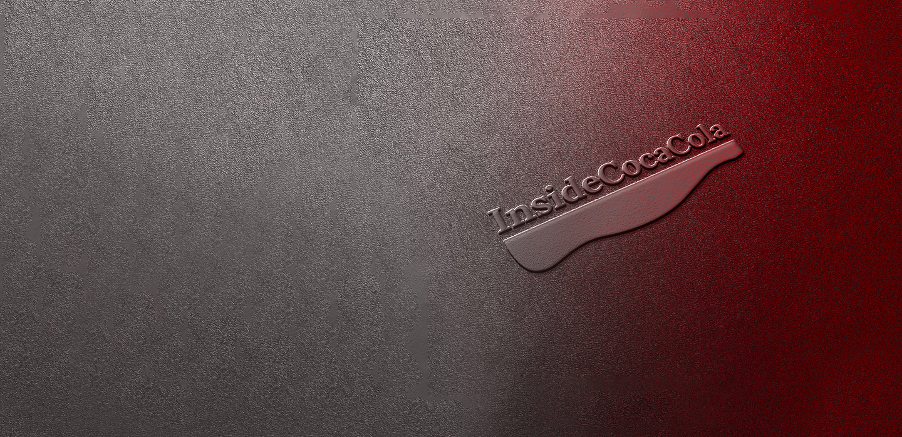
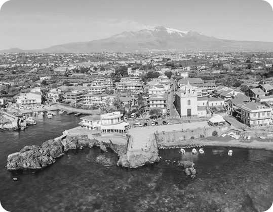

Scopri chi c'è
dietro InsideCocaCola
Conoscici
oltre il brand!
Un viaggio attraverso identità, innovazione e cultura per conoscere il mondo Coca-Cola oltre il brand, tra storia, valori e persone che ne hanno costruito il successo nel tempo.
Conosci la passione Coca-Cola.
Siamo un team appassionato del mondo di The Coca-Cola Company, con l’obiettivo di raccontare la storia, i valori e l’evoluzione di uno dei marchi più conosciuti al mondo. Crediamo che Coca-Cola non sia solo una bevanda, ma anche un simbolo di condivisione, convivialità e cultura popolare che accompagna generazioni di persone in ogni parte del pianeta. La nostra missione è creare uno spazio completo, aggiornato e facile da consultare, dedicato all’universo Coca-Cola: dalle origini del brand alle campagne pubblicitarie più iconiche, dalle curiosità storiche ai prodotti che hanno segnato epoche diverse. Vogliamo offrire contenuti interessanti sia agli appassionati sia a chi desidera semplicemente scoprire di più su questo marchio celebre.
Sul nostro sito troverai informazioni, approfondimenti, immagini storiche, curiosità, collezioni e racconti legati al mondo Coca-Cola, così da poter esplorare la sua storia e il suo impatto culturale in modo semplice e coinvolgente. Crediamo nel valore della condivisione: ogni esperienza, ricordo o contributo dei nostri visitatori aiuta ad arricchire questo progetto e a mantenere viva la passione per il mondo Coca-Cola. Per questo, ci piace farvi sentire parte della nostra community!

Stazzo, frazione di Acireale (Ct)
Dentro la nostra sede.
Il nostro ufficio si trova a Stazzo, in provincia di Catania, un luogo affacciato sul mare dove la luce della Sicilia accompagna ogni giornata di lavoro. Da qui coordiniamo informazioni e contenuti dedicati al mondo di The Coca-Cola Company, trasformando idee, storie e curiosità in un racconto condiviso. È uno spazio in cui il ritmo del mare incontra quello della creatività, ispirandoci ogni giorno a raccontare Coca-Cola come simbolo di connessione, cultura e memoria collettiva.
- Il nostro ufficio è aperto dal lunedì al venerdì, dalle 9:00 alle 18:00. Via Scalo 42 – 95024 Stazzo, Acireale (CT)
- Telefono: +39 095 7123456
- Email: redazione@inside.coca-cola.it